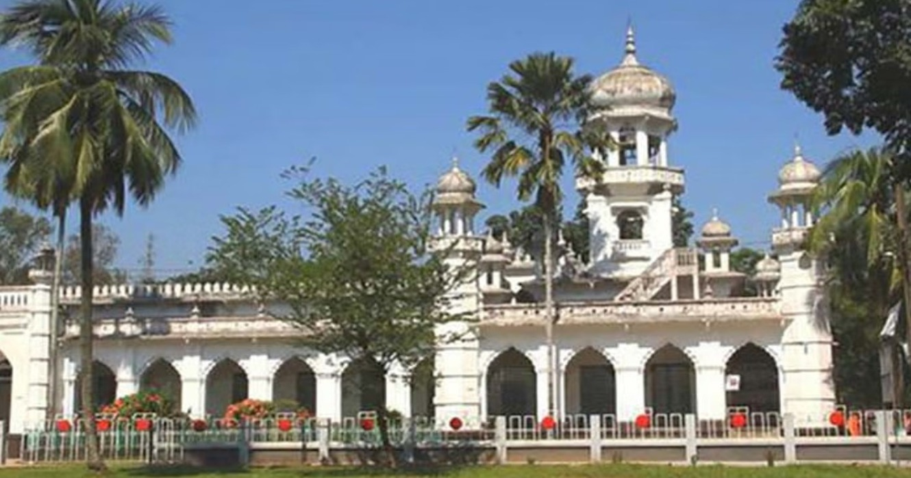
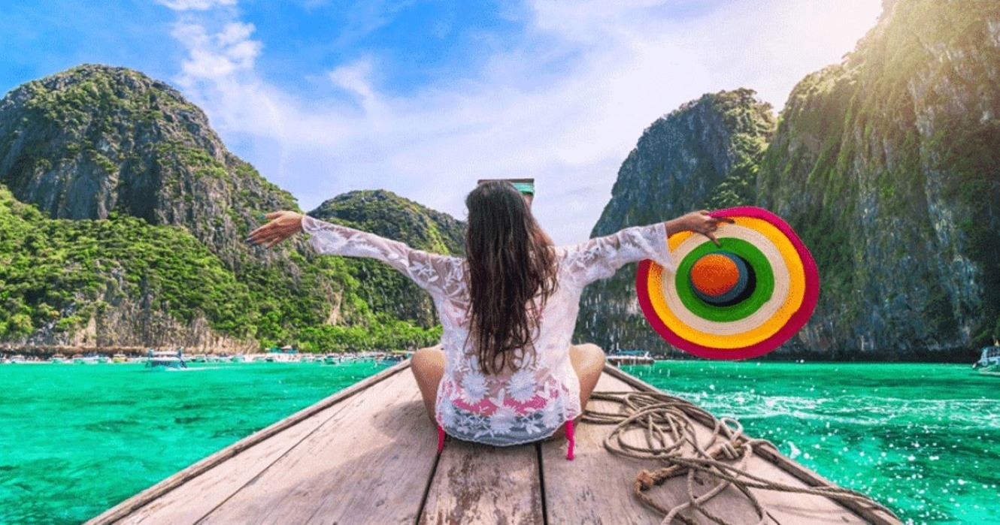

Travel to Rangpur
 Author: Zabir Hossain
After crossing the Jamuna Bridge, the road leading towards Rangpur, on either side of the road, there is only horizon of fields on either side. Ripe paddy fields, jute fields, yellow mustard fields, golden maize and sugarcane fields. Small villages, rows of betel-coconut groves and small rivers can be seen at some distance. You can reach the historic northern district of Rangpur in a short time by driving on the beautiful roads.
You can go from Dhaka to Rangpur by bus, train or plane. There are very good luxury buses. Best time to visit Rangpur is September to April. Keep winter clothes with you for walking during this time.
Favourite Food of Rangpur
What you will see in the Rangpur?
Places of interest
- Rangpur Carmichael College
- Tajhat Zamindar Bari
- Devi Chaudhurani's Palace
- Begum Rokeya University
- Rangpur Museum
Food List of Rangpur
- Sindal is the traditional food of Rangpur
- Potato Dal is the traditional food of Rangpur
- Kachur Dal is the traditional food of Rangpur
- Velka & Palka are the traditional food of Rangpur
- Fried jute-leaf named Shuktanee